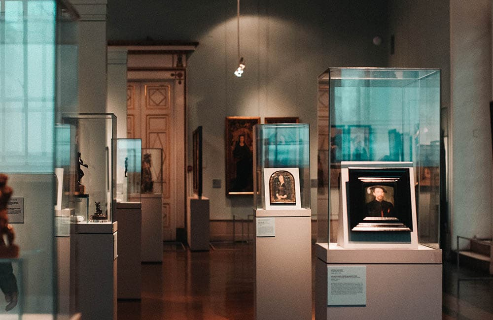
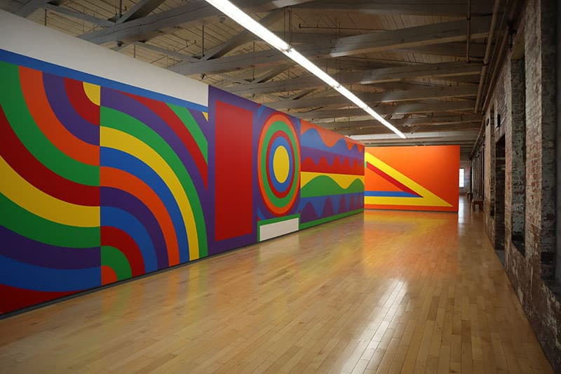

Klasycyzm ekspresyjny, wystawa południowa
Wystawy Collins & Milazzo były serią wystaw sztuki, których kuratorami był zespół Tricia Collins i Richard
Milazzo, głównie w Nowym Jorku w połowie lat osiemdziesiątych. Byli także współredaktorami i współwydawcami
magazynu poświęconego teorii sztuki Effects: Magazine for New Art Theory.
W 1984 roku Collins i Milazzo zaczęli współpracować jako kuratorzy, aby przekształcić wystawę grupową w
krytyczne oświadczenie. Collins i Milazzo w latach 80-tych wyeksponowali nowe pokolenie artystów. To ich
wystawy
i pisma pierwotnie ukształtowały teoretyczny kontekst dla nowego rodzaju sztuki postkonceptualnej,
sprzeciwiającej się jednocześnie neoekspresjonizmowi i sztuce obrazowo-teoretycznej. To właśnie w tym
kontekście
po raz pierwszy połączyła się twórczość wielu artystów związanych z neokonceptualizmem (lub tym, co krytycy
nazywali redukcyjnie Simulationism i Neo Geo).

Neoekspresjonizm, wystawa północna
XIX wiek w sztuce francuskiej charakteryzuje się ciągłą walką między tradycyjnie wykształconymi artystami,
wspieranymi przez oficjalną politykę, a rosnącą liczbą artystów, którzy woleli pracować indywidualnie i na
własne ryzyko.
Przegląd sytuacji historycznej jest trudny, nawet sto lat później. Ale najwyraźniej
przeciwnicy oficjalnej polityki zyskali poparcie po upadku II Cesarstwa i odegrali kluczową rolę w
przekierowaniu francuskiej polityki kulturalnej na stanowiska liberalne. Zatem rozpad Société Nationale des
Beaux-Arts w 1890 r. Można uznać za pierwszą manifestację secesji.
W 1984 roku Collins i Milazzo zaczęli współpracować jako kuratorzy, aby przekształcić wystawę grupową w
krytyczne oświadczenie. Collins i Milazzo w latach 80-tych wyeksponowali nowe pokolenie artystów. To ich
wystawy
i pisma pierwotnie ukształtowały teoretyczny kontekst dla nowego rodzaju sztuki postkonceptualnej,
sprzeciwiającej się jednocześnie neoekspresjonizmowi i sztuce obrazowo-teoretycznej. To właśnie w tym
kontekście
po raz pierwszy połączyły się prace wielu artystów związanych z neokonceptualizmem (lub tym, co krytycy
nazwali
redukcyjnie Simulacjonizmem i Neo Geo).
Nowe nurty, wystawa zachodnia
W otoczeniu kilku malarzy Rabindranath zawsze chciał malować. Pisanie i muzyka, dramatopisarstwo i
aktorstwo przyszły mu naturalnie i prawie bez treningu, tak jak stało się to z kilkoma innymi członkami jego
rodziny, a nawet w jeszcze większym stopniu.
Ale malowanie wymykało mu się. Jednak wielokrotnie
próbował opanować tę sztukę i jest kilka odniesień do tego w jego wczesnych listach i wspomnieniach. Na
przykład w 1900 roku, kiedy miał blisko czterdzieści lat i był już uznanym pisarzem, napisał do
Jagadishchandry Bose: „Będziesz zaskoczony, słysząc, że siedzę z rysunkiem ze szkicownika.
